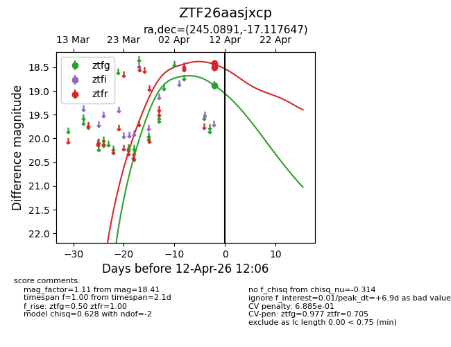
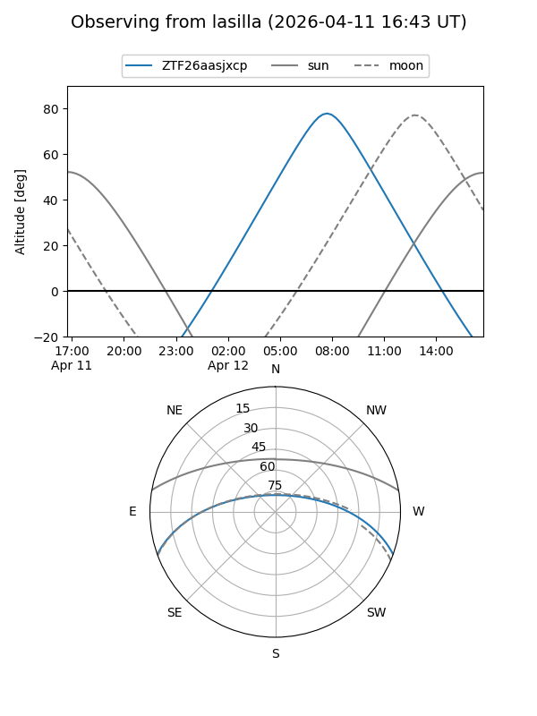
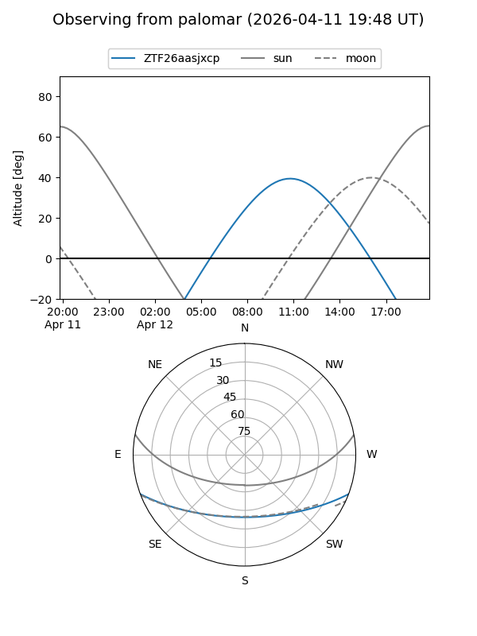

ZTF26aasjxcp
Target ZTF26aasjxcp at 2026-04-12 12:18
Aliases and brokers:
FINK: link
Lasair: link
ALeRCE: link
alt names
ZTF26aasjxcp (ztf,fink_ztf)
Coordinates:
equatorial (ra, dec) = 245.0891,-17.11765
equatorial (HMS+DMS) = 16:20:21.38,-17:07:03.53
galactic (l, b) = (357.9372,+22.75288)
Flags:
likely cv
Photometry:
last ztfg=18.88, ztfr=18.41
1 ztfg, 2 ztfr detections
Lightcurve

Visibility


Additional plots